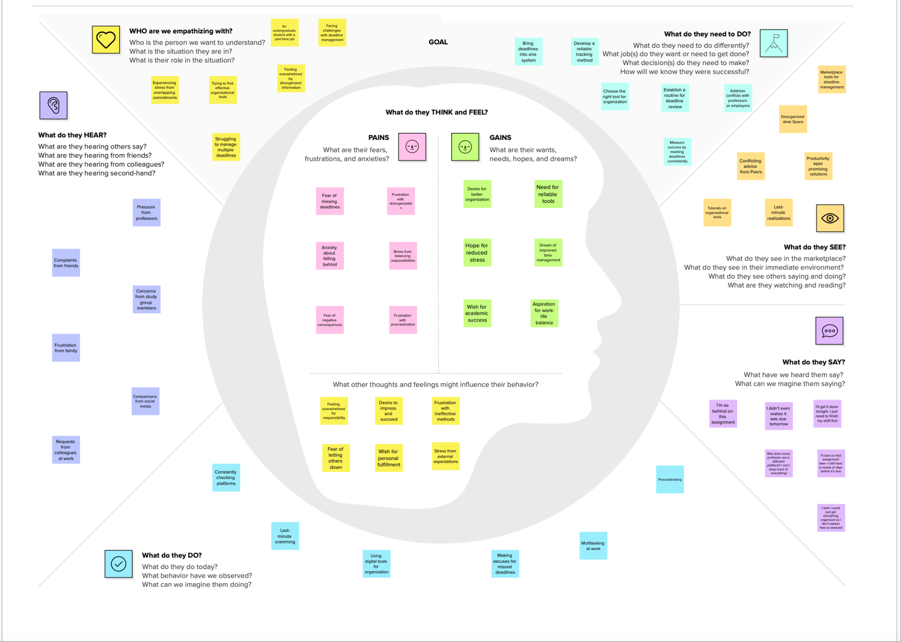
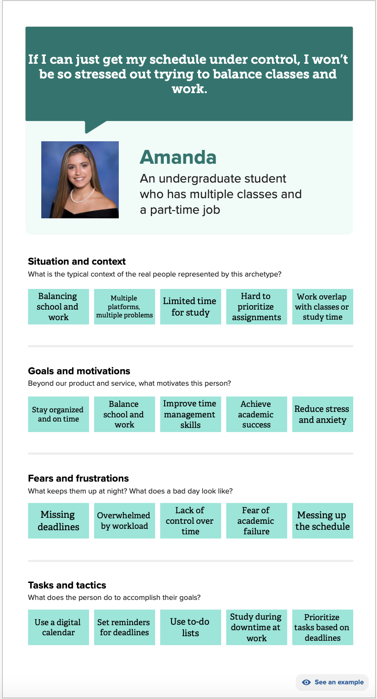
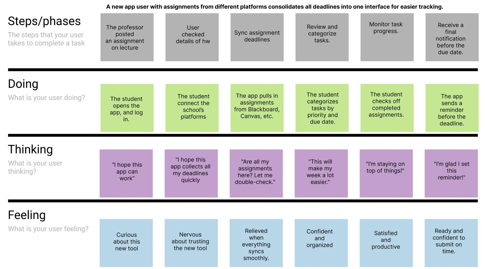
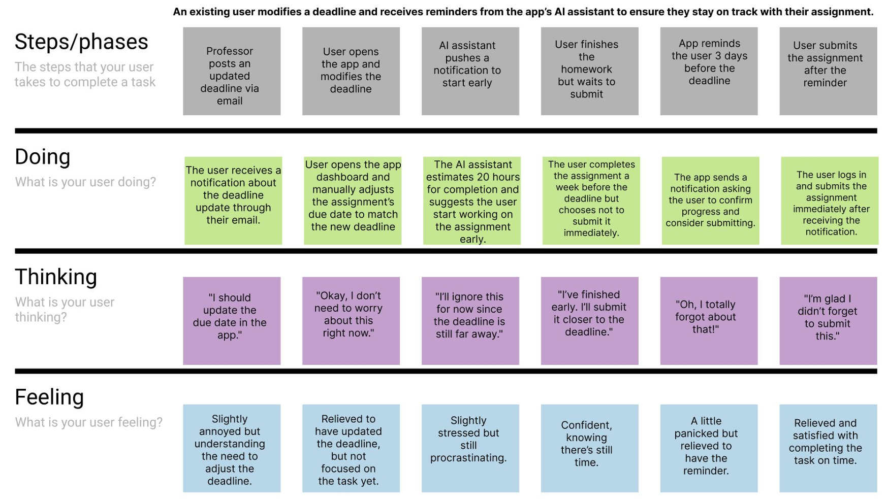
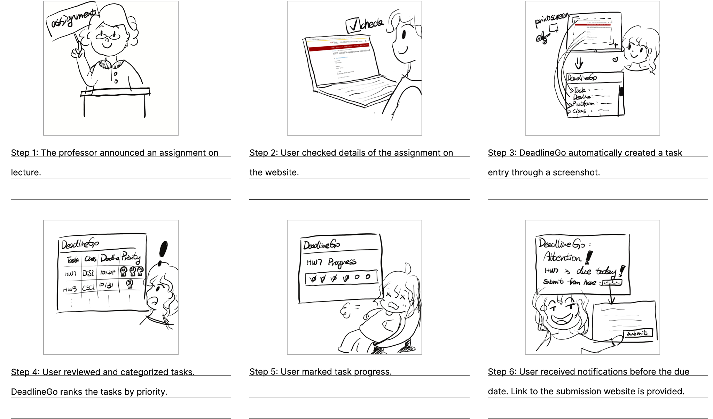
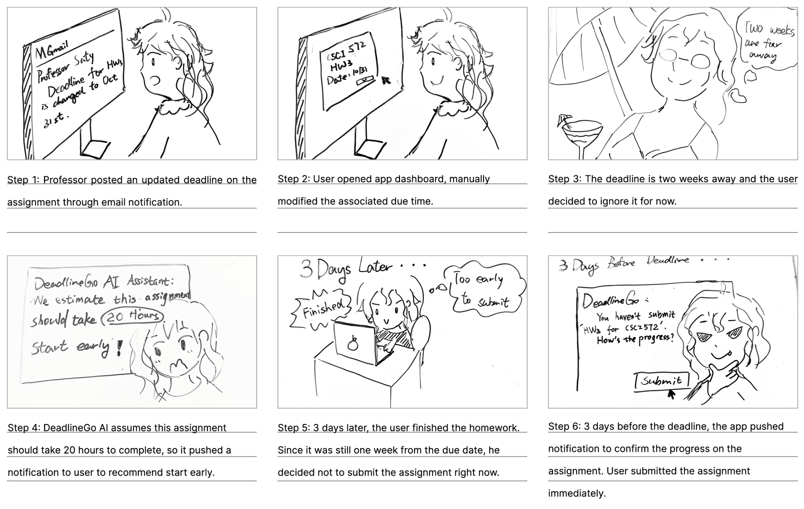
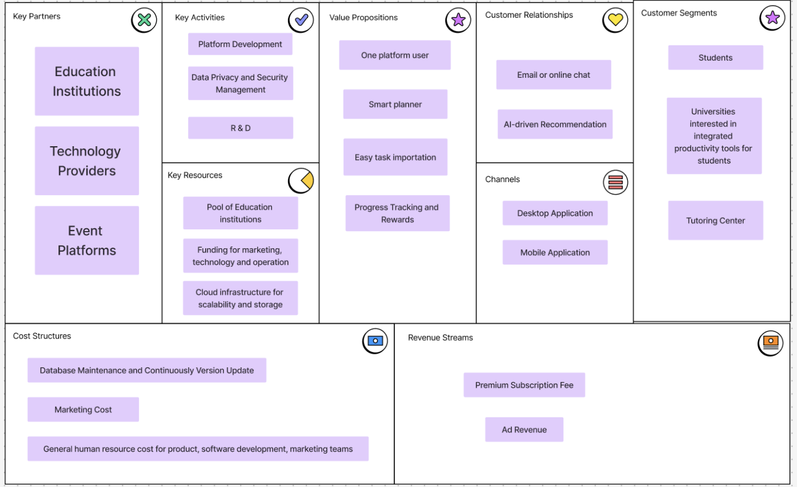
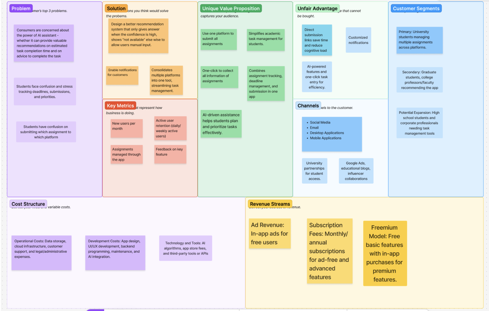

DeadlineGo — Product Case Study
01 Introduction
DeadlineGo, conceptualized in November 2024, offers a streamlined, one-click assignment management experience designed to reduce friction and improve time management for college students. The product addresses a fragmented academic ecosystem where students routinely juggle four to six separate platforms — Brightspace, Gradescope, DEN, GitHub, course websites, and professor portals — with no unified view of their deadlines.
02 Problem Statement
Students struggle with managing multiple deadlines across different subjects. Missing deadlines or juggling too many assignments negatively impacts academic performance and mental well-being. The problem is compounded by platform fragmentation — each institution deploys a different combination of LMS and supplementary tools, creating no single source of truth for a student's workload.
Initial customer discovery surfaced three recurring pain points: (1) the cognitive overhead of checking multiple platforms daily, (2) missed deadlines caused by platform outages or notification fatigue, and (3) the absence of any intelligent prioritization layer that accounts for workload density across subjects.
03 Customer Discovery & Validation
Three in-depth discovery interviews were conducted with USC students spanning different majors, course loads, and time management habits. Key themes were synthesized via an empathy map covering what students think, feel, say, and do around deadline management.


04 Competitive Research & Analysis
Twelve competitors were benchmarked across direct and indirect categories. The analysis revealed that while general productivity tools are abundant, none are specifically tailored to the academic deadline management use case with AI-assisted import.
| Type | Products | Gap |
|---|---|---|
| Direct | Todoist, iPhone Reminders, Google Calendar, Motion, Sunsama, Notion | No academic-specific tracking; no AI screenshot import; no submission link management |
| Indirect | Physical Calendar, ClickUp, Trello, Square Go, D2L Brightspace Pulse, Airtable | Either too generic or too narrowly scoped to one institution's LMS |
Google Calendar and iPhone Reminders dominate daily usage among students but lack academic-specific deadline tracking. This leaves a significant gap for a dedicated student productivity tool with AI capabilities.
05 Feature Definition
Eight core features were defined through synthesis of interview insights, competitive gaps, and design iteration. Features are ranked by strategic priority.
-
F1 ★
Automatic Information Retrieval from Screenshot — One-click VLM-powered extraction of task name, course, due date, and submission URL from any assignment screenshot. Identified as the product's "secret recipe."
-
F2
Customizable Notifications — Per-task deadline reminders with configurable schedules and a notification archive for historical reference.
-
F3
Smart Evaluation & Recommendation (AI Chatbot) — Conversational LLM interface for workload prioritization, study time suggestions, and weekly learning pattern summaries.
-
F4
List View with Custom Ranking & Grouping — Sortable, filterable task list with user-defined grouping criteria (by course, due date, priority).
-
F5
Calendar View for Due Dates — Visual calendar mapping all deadlines across courses for at-a-glance workload awareness.
-
F6
Manual Details Modification — Editable fields for all AI-extracted metadata, enabling user correction and customization.
-
F7 ★
Link to Submission Page — Auto-extracted direct link to the assignment submission page, enabling one-click submission navigation.
-
F8
Progress Tracking — Percentage-based completion notation per task. Milestones award coins redeemable for UI themes (dark, forest, ocean), gamifying on-time submission behavior.
06 Design Iterations & Prototype
An interactive Figma prototype was developed from scratch across 15 screens, covering the complete task lifecycle from initial import through submission and progress review. The prototype underwent two major iterations: the initial version following feature definition, and a revised version incorporating changes from user research findings.
User Journey Storyboards
Two scenarios were storyboarded to map the full emotional arc of a user — from discovering the problem through achieving a successful submission.




15-Screen Prototype
- 01 List View & Homepage
- 02 Calendar View
- 03 Task Detail View
- 04 Task Detail Editing
- 05 Task Notes
- 06 Task Progress
- 07 Progress — Adding Notes
- 08 Task Submission
- 09 Submission Congratulations
- 10 Settings — Login Page
- 11 Settings — Theme Page
- 12 Settings — Billing Page
- 13 Notification Archive
- 14 AI Chatbot
- 15 Weekly Summary
07 User Research Study
A formal usability study was conducted with 8 participants to validate the product's core hypotheses. Two scenario walkthroughs were tested: a new user discovering the app and completing a full assignment import cycle, and an existing user managing a changed deadline with AI reminders.
| Hypothesis | Focus | Finding | Verdict |
|---|---|---|---|
| H1 | Value Proposition | Strong interest in centralized task management. Exceeded the 70% interest threshold across all participants. | ✓ SUCCESS |
| H2 | Business Model | Minimal interest in paid subscription; users prefer free + ads. Pivoted to freemium with premium AI features behind paywall. | ↻ REVISED |
| H3 | One-Click Entry | Overwhelming support. Designated the product's "secret recipe." No direct competitor offers this for academic deadlines. | ★ HIGH PRI |
| H4 | AI Time Estimation | Mixed feedback; users skeptical of AI accuracy. Rebranded as interactive AI Chatbot, emphasizing conversation over automated prediction. | ↻ REBRANDED |
| H5 | Submission Link | High interest. Promoted to a prominently showcased feature in all demo sessions due to strong positive reception. | ✓ SUCCESS |
08 Post-Research Design Iteration
Following the user research study, several targeted design changes were implemented to address the findings:
- →Standardized interface color scheme across all screens for visual consistency
- →Added a dedicated notes section to the task editing flow
- →Introduced monthly and annual subscription plan options on the billing screen
- →Added AI-powered link-to-summary feature — converts a submission URL into a task summary
- →Introduced weekly reports with AI-generated learning pattern analysis as a premium feature
- →Added deeper knowledge gap analysis as a premium AI capability to justify the paid tier
09 Business Model
The business model evolved from a direct subscription model to a freemium structure following user research, which revealed strong price sensitivity among the student demographic.


10 Reflection & Next Steps
User research confirmed strong product-market fit for the core import and submission link features, while surfacing a critical insight: students are skeptical of opaque AI outputs. The AI chatbot pivot — from deterministic time estimator to conversational interface — directly addressed this concern and improved perceived trustworthiness.
Key positive feedback centered on the task import feature and the submission link feature. The primary concern raised was around AI accuracy, which was addressed through the chatbot rebranding and emphasis on interactivity over automation.